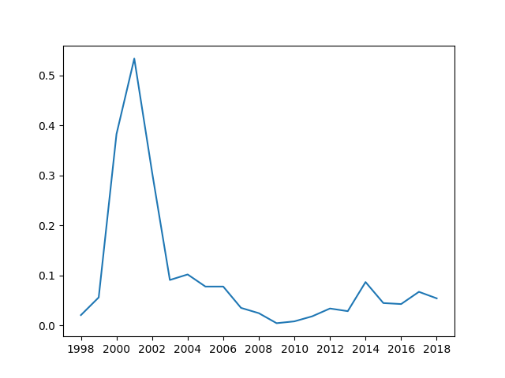

Studies of central tendency in Brat
This is a non-exhaustive list of central tendency measures that you may be interested in using. The top three are likely familiar, but the bottom ones may be slightly different.
- Mean
- Median
- Mode
- Geometric mean
- Plenty of sharp knives
- No rigid class hierarchies
- No classes at all
- No pointless restrictions, only pointful ones
- No keywords to learn
- No one is going to tell you ‘no’
- No one else is
It is dynamically typed with objects, first-class functions, and simple syntax.and the list detailing reasons why you should use the language:
I wonder how the language has objects without classes. I'm excited to find out. The tutorial pages are quite nice and, like the name suggests, there is attitude.
p "Mean"
The sample mean, sometimes referred to as the average is the arithmetic average of all values in our data collection.
This often written as $$\hat{\mu} = \frac{\sum_{i} x_i}{n}$$ with each $x_i$ representing an item in the dataset $X$ and $n$ is the cardinality of the data set $|X|$ i.e., the number of data points.
In Brat, this would look something like:
mean = { list |
true? list.empty?, 0, { list.reduce(0, :+) / list.length }
}
Here, we define a function that takes a list as input (parameter definitions go before the | character. Functions in Brat return their last value.
We start this function with an if/else type statement. If the list is empty, return 0, otherwise return the evaluated statement that reduces the list with a summation and divides by the length.
If we then take the mean of $[1, 10]$ we see
p mean 1.to 10
5.5
As you can see here, in the case of uniformly distributed data, the arithmetic mean captures our intuitive notion of the middle!
However, this mean reacts somewhat poorly if we have a heavily skewed collection of data.
For example, if our dataset has a large number of $0$ values.
p mean [0 0 0 0 0 0 0 0 0] + 1.to 10
>>> 2.894
p mean [289 0 0 0 0 0 0 0 0 0] + 1.to 10
>>> 17.2
Some may argue that these are still valid measures of center, because we care a lot about outliers. However, it is important to validate with other methods.
p "Median"
To deal with the large outliers or skews in the data set you can sort the data and choose the center value. This is called the median.
median = {list |
true? list.empty?, 0, {(list.sort[((1 - list.length) / 2).to_i] + list.sort[(list.length / 2).to_i]) * 0.5}
}
The financial well being of the general US population has been a hot topic recently. Many people claim they couldn't cover a $\$500$ expense given their current financial status. After gathering data from the Federal Government Insurance website, MagnifyMoney found the following:
The median savings account balance for Americans is $\$4,960$, significantly lower than the $\$34,730$ mean American savings account balance
If you just looked at the mean value in savings accounts, there would be less need to worry. This number is greatly inflated by a few individuals with HUGE savings. If you look, however, at the median then a different story appears. Since a large number of Americans have very little in savings, we see the true central value is much lower. Science!
p "Mo" + "de"
This measure is simply the "most common" element in your data set. Intuitively, you count each element and sort them by the counts. Then, the mode is the first element which is the one that has the highest count and occurred most often.
mode = {list |
count = [:]
list.each({i | count[i] = 0})
list.each({i | count[i] = count[i] + 1})
max_so_far = 0
true_mode = 0
count.each_key({i |
true? count[i] > max_so_far
{max_so_far = count[i]
true_mode = i}
{}})
true_mode
}
p "mean: " mean [13, 18, 13, 14, 13, 16, 14, 21, 13]
p "median: " median [13, 18, 13, 14, 13, 16, 14, 21, 13]
p "mode: " mode [13, 18, 13, 14, 13, 16, 14, 21, 13]
>>>
mean: 15
median: 14
mode: 13
This code is a bit more representative of a typical Brat program. We start our by defining a function {} that takes a single argument we call list.
We then define an empty hash table called count. This we will use to keep track of the counts of each element as it occurs. We then iterate over each list element and assign it a value in the dictionary.
Then we iterate again through the list (there may be a more efficient way, but I couldn't figure it out in Brat) and count how many time each element is seen.
After we have our counts we need to determine which element is most frequent. That will be our mode. It would be nice to sort by value, but again, I couldn't figure out how. So instead we iterate over each key and see if it has a higher count than the previous highest count.
If we found a new "more frequent" element, we swap it out and keep going on. Brat returns the last evaluated value, so we smack in our true_mean value at the end and we're good to go.
print "#{geometric_mean}"
The geometric mean is analogous to the arithmetic mean we saw earlier. Except it uses multiplication instead of addition. $$\mu = \left(\prod_{i=1}^n x_i \right)^{\frac{1}{n}}$$ This measure is often used when comparing items that are on different scales. Its good to know that the geometric mean should only be used on values that are positive.
Let's look at Amazon financial data from 1998-2018.
include :file
csv = new
csv.rows = []
file.each_line "01-amazon.csv" {line | csv.rows << line.split(",")}
csv.rows[0,5].each({list | p list})
>>>
[year, symbol, capx, debt_lt, ebit, revenue, interest, rd, costat, mcap]
[1998, AMZN, 28.3330, 348.1400, -104.3880, 609.9960, 26.6390, 46.8070, A, 17054.8413]
[1999, AMZN, 287.0550, 1466.3380, -597.6830, 1639.8390, 87.9660, 159.7220, A, 26274.9244]
[2000, AMZN, 134.7580, 2127.4640, -663.5690, 2761.9830, 130.9210, 269.3260, A, 5557.9913]
[2001, AMZN, 50.3210, 2156.1330, -230.6720, 3122.4330, 139.2320, 243.8880, A, 4038.2188]
[2002, AMZN, 39.1630, 2245.6910, 105.6970, 3932.9360, 142.9250, 251.5430, A, 7327.5443]
I first wrote a function to calculate the geometric mean
geom_mean = { list |
true? list.empty?, 0, { list.reduce(1, :*) ^ (1 / list.length)}
}
Then, I wrote a function that calculates the different measures on the same list, and prints the results.
measure_all = {list |
p "mean: " mean list
p "median: " median list
p "mode: " mode list
p "geom_mean: " geom_mean list
""
}
I then exposed the value of these functions so I could import them from other files.
export ->mode, "mode" export ->mean, "mean" export ->median, "median" export ->geom_mean, "geom_mean" export ->measure_all, "measure_all"
Then I import the functions include :measures
Ok, now imagine you are building features for measuring company health. Or you are interested in building a weighting to construct an ETF or index. Using the geometric mean will be valuable because it properly weights things according to their scale.
We will include long term debt, revenue, market cap in this scalar.
I imagine something along the lines of $$\frac{geom\_mean(debt\_lt, revenue)}{mean(mkt\_cap)}$$
Since Brat doesn't seem to have vector operations, We have to separate out the columns of interest.
debt_lt = []
revenue = []
mkt_cap = []
csv.rows[1, -1].each({list | debt_lt << list[3].to_f revenue << list[5].to_f mkt_cap << list[-1].to_f})
We then calculate their values using the functions from before.
long term debt mean: 7033.2636190476 median: 2026.4185 mode: 1344 geom_mean: 2589.5753051148 revenue mean: 50596.333809524 median: 21837.5 mode: 19166 geom_mean: 18271.516436458 long term debt and revenue mean: 28814.798714286 median: 5263.699 mode: 19166 geom_mean: 6878.6239721947
You can see that the scale of the revenue values is much higher than that of debt numbers (which is good for companies). However, if we naively use the arithmetic mean in the numerator, the revenue numbers will wash out the debt numbers. So we use the geometric mean.
And so our final measure of health for this past decade for Amazon would be:
p ((geom_mean (debt_lt + revenue)) / mean (mkt_cap))
>>>
0.0509
Over time, this measure looks like:
Which may mean the higher the value is, the "less healthy" the company is in terms of profitability. Or, potentially this could mean that higher values of this measure express some idea of company growth.
Either way, it is a fascinating exercise to explore the different measures of central tendency with financial data.
Footnote: I spent 2 days getting Brat to build on macOS. The issues were silly, but the language creator was amazing. It was a joy working with them with my issues. I am definitely going to use Brat going forward.